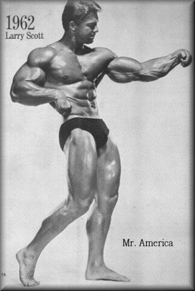
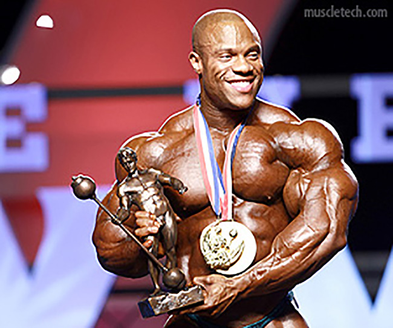

My favorite hobby is bodybuilding. I competed in my first show, the NPC Palmetto Classic, on May 7th, 2016. I won my first show and fell in love with the process of preparing for a show and the act of competing. While I am taking a break in bodybuilding to compete in powerlifting, I will have two bodybuilding shows in 2016. My first show will be another national qualifier, while my second show will be the nationals in Pittsburg where I will compete for the NPC National teen's championship, the most prestigious title in teenage bodybuilding.

My first competition was in 2016 at the age of 17, however my passion for bodybuiding and weight training itself began much earlier. My father, Olly Pierce, was once a competitive bodybuilder himself his interest in bodybuiding caused him to open his own gym. At the age of twelve I wanted to begin weight training seriously, I fell in love with the activity immediately and have done it practically every day since.After five years of training I decided it was time to finally take the stage.
Today bodybuilding is considered a fairly well known sport and while it may be misunderstood there are still thousands of proffesional and amateur competitors annually.Throughout the 19th and early 20th century bodybuilding was considedered a taboo spectacle worthy of being viewed at a circus. One of the major changes of the public's opinion on bodybuilding began due to the creation of the Mr. Olympia contest, the bodybuilding show designated to be largest possible stage for a bodybuilder crowning the top competitor in the world. The first Mr Olympia crowned Larry Scott the champion in 1965, however it was not until the 7 time Mr. Olympia Arnold Schwarzenneger took the stage in the film "Pumping Iron" when bodybuiding experienced a boom of social interest. After the release of "Pumping Iron" bodybuilding, and weight training in general, socially became a well known aspect of modern life.
While the Mr Olympia Contest started with the champion being Larry Scott in 1965 the competition and sport itself has gone through many changes in the last fifty years. One of these changes is the extreme size difference in the competitors at the IFBB pro level today, compared to the much smaller competitors in the early stages of professional bodybuilding. While in the earlier days many of the athletes competed around 225 or 230 pounds, today a large amount of the participants, such as Dallas Mcarver , compete weighing closer to 300pounds! Another major difference is the ability to create a career out of this passion. While it is still difficult, the top competitors can gross seven figures annually through contest wins, sponsorships, and promoting themselves on social media. To highlight the drastic change in salary the first place winner of the Mr Olympia show in September of 2016 will take home the prize money of $1,000,000 compared to the earnings of Arnold Schwarzenneger's first six shows combined which only grossed to a total of $7,500.
By: Aidan P
{kind=link}